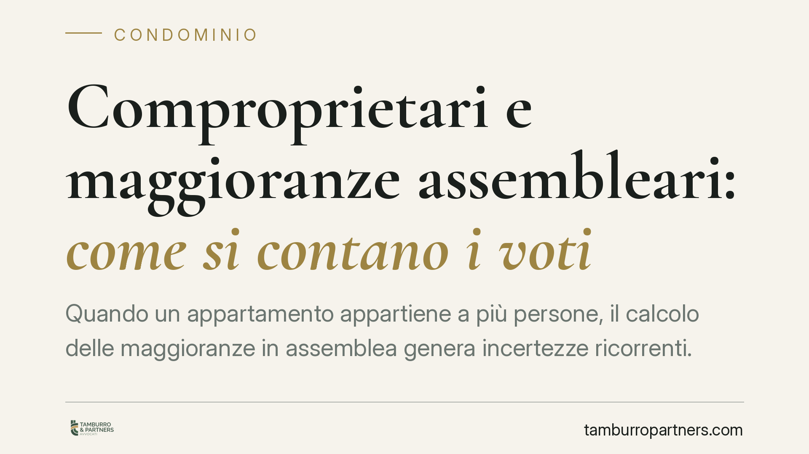

Comproprietari e maggioranze assembleari: come si contano i voti
Quando un appartamento appartiene a più persone, il calcolo delle maggioranze in assemblea genera incertezze ricorrenti. La questione tocca il valore del voto, il diritto di ciascun contitolare a partecipare e la tenuta delle delibere in caso di impugnazione. Vediamo come orientarsi secondo la disciplina codicistica e l'interpretazione prevalente, con indicazioni operative per amministratori e comproprietari.

Il caso
Un'unità immobiliare con più proprietari è situazione frequente: eredi che condividono un appartamento, coniugi in comunione, soci di un immobile acquistato insieme. In assemblea di condominio la domanda è ricorrente: quante "teste" valgono questi comproprietari? E tutti hanno diritto a intervenire?
La risposta incide direttamente sulla validità delle delibere. Un errore nel computo può esporre il condominio a impugnazioni e all'annullamento di decisioni già assunte.
Inquadramento normativo
Le maggioranze assembleari si calcolano su due parametri, ai sensi dell'art. 1136 c.c.: il numero degli intervenuti (le cosiddette "teste") e il valore delle rispettive quote millesimali.
Sul primo parametro, l'orientamento prevalente in giurisprudenza e in dottrina considera l'unità immobiliare in comproprietà come riferibile a un solo condomino, ai fini del computo delle teste. Si tratta dell'interpretazione più diffusa, ma la materia presenta profili articolati: la soluzione va sempre verificata alla luce del caso concreto e del regolamento condominiale.
Diverso è il diritto di partecipazione. Ciascun contitolare conserva la facoltà di intervenire in assemblea. Tuttavia, l'art. 67 disp. att. c.c. prevede che, qualora un'unità appartenga a più proprietari, questi debbano designare un rappresentante comune per l'esercizio del voto. In mancanza di accordo, la nomina può essere disposta secondo le modalità previste dalla norma.
Sul luogo della riunione, l'art. 66 disp. att. c.c. disciplina la convocazione e richiede che l'assemblea si tenga in un luogo idoneo a consentire l'effettiva partecipazione dei condomini. La scelta di una sede irraggiungibile o pretestuosa può incidere sulla regolarità della convocazione.
Implicazioni pratiche
La distinzione cardine è tra diritto a intervenire e computo unitario del voto. I comproprietari possono tutti presenziare e discutere, ma il peso del loro voto resta ancorato all'unità: una testa e i millesimi corrispondenti, espressi in modo unitario.
Quando i contitolari non trovano accordo, o quando manca la designazione del rappresentante comune, possono sorgere complicazioni sulla regolarità del voto espresso. L'amministratore deve gestire la situazione con rigore, perché proprio su questi passaggi si concentrano le contestazioni successive.
In caso di impugnazione, l'onere della prova grava su chi impugna la delibera: spetta al condomino dissenziente dimostrare il vizio che inficia la decisione. Va inoltre ricordato il termine perentorio: l'azione di annullamento deve essere proposta entro trenta giorni, ai sensi dell'art. 1137 c.c., decorrenti dalla delibera per i presenti dissenzienti o astenuti, e dalla comunicazione del verbale per gli assenti. Decorso tale termine, la delibera annullabile si consolida.
Cosa fare in concreto
Per l'amministratore:
- Verificare la titolarità delle unità prima dell'assemblea, individuando i casi di comproprietà dall'anagrafe condominiale.
- Richiedere la designazione del rappresentante comune ai sensi dell'art. 67 disp. att. c.c. quando un'unità appartiene a più soggetti, acquisendola per iscritto.
- Computare il voto in modo unitario per ciascuna unità, annotando a verbale chi ha espresso la volontà e a quale titolo.
- Scegliere con attenzione la sede della riunione, in luogo idoneo e accessibile, per evitare contestazioni sulla convocazione.
Per i comproprietari:
- Accordarsi preventivamente sul rappresentante comune e sul senso del voto, per evitare che l'unità resti priva di espressione valida.
Nota conclusiva
La gestione dei comproprietari in assemblea è un terreno tecnico su cui le delibere si consolidano o cadono. La regola del computo unitario della testa riflette l'orientamento prevalente, ma l'applicazione concreta dipende da regolamento, modalità di convocazione e dinamiche tra i contitolari. In presenza di dubbi, è opportuno un controllo mirato della regolarità procedurale prima che i termini di impugnazione decorrano.
Contributo informativo a cura di Tamburro & Partners Avvocati. Non costituisce parere legale.
Ogni condominio ha una storia a sé.
Se gestisci un'amministrazione e vuoi un confronto su una specifica questione condominiale, scrivi allo studio. Ti rispondiamo entro un giorno lavorativo.